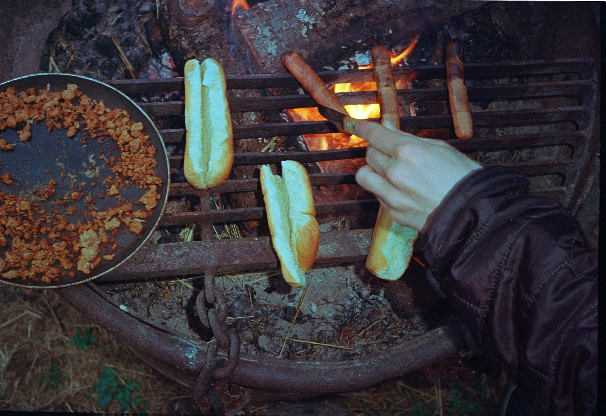
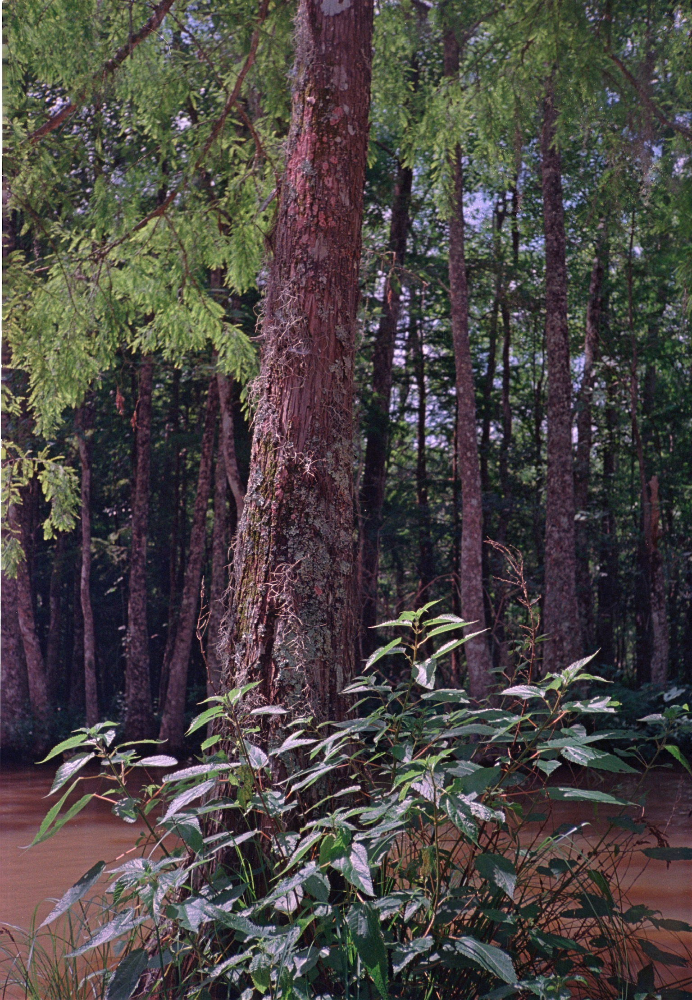
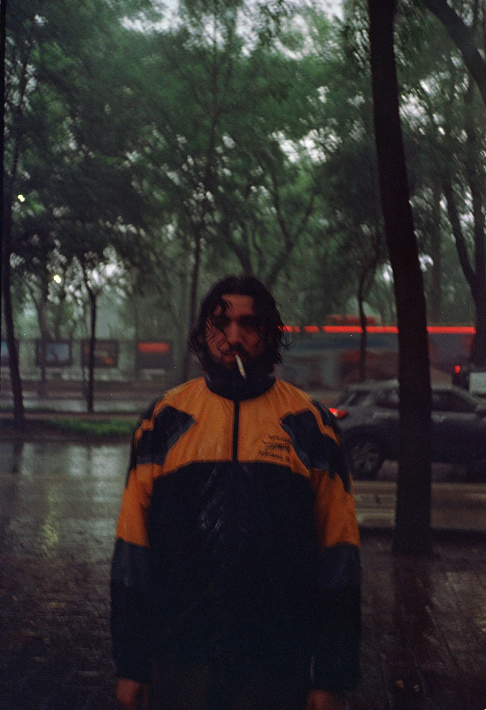
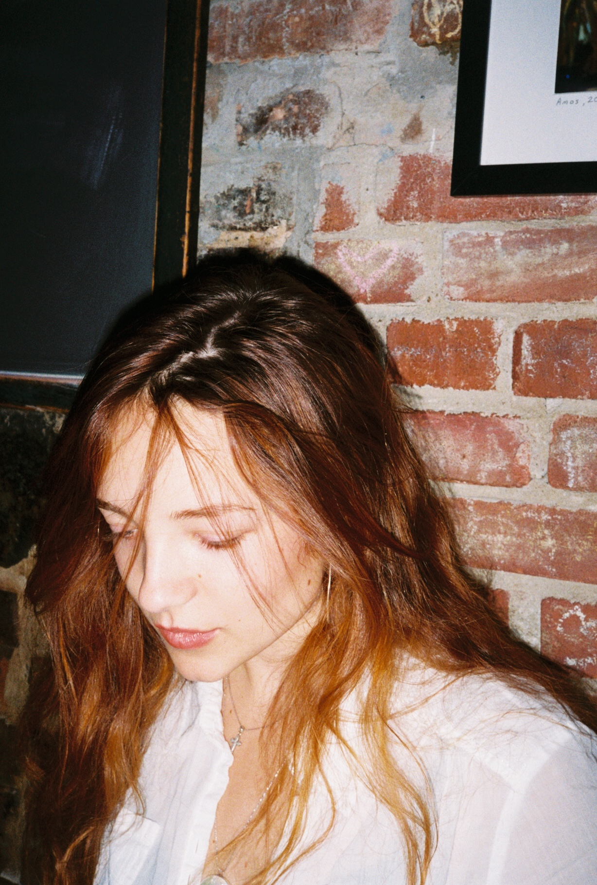
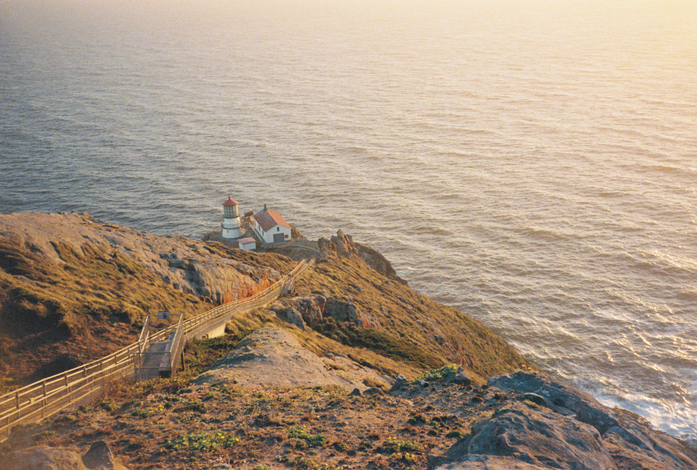
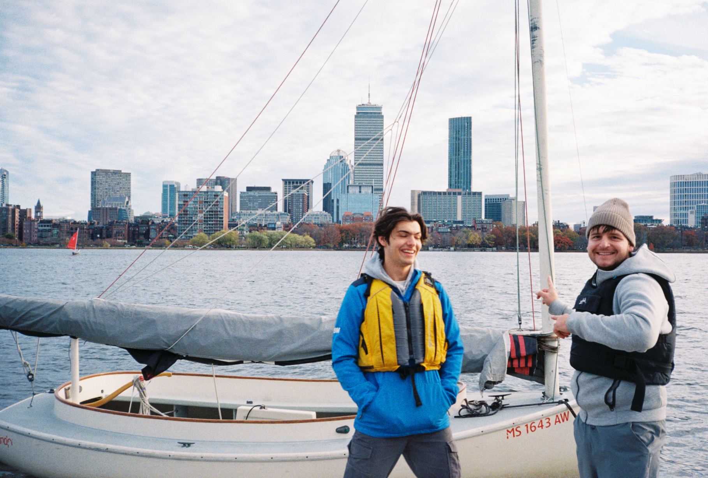
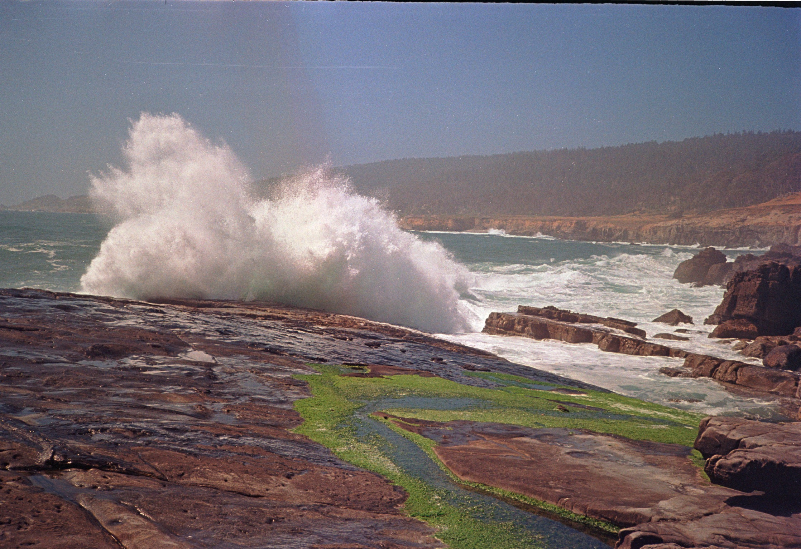

Photography
Some photos that I have taken on my Canon Sure Shot Max. Taken on Fujifilm 400 and Kodak ultramax.









Josh Bardwick
I am studying computer engineering at Boston University with a concentration in Machine Learning. My graduation is expected in May 2025.
I am passionate about contributing to climate change research as part of an engineering team. The ocean is an integral piece of our ecosystem, and I aim to help researchers collect critical data using autonomous vehicles. My expertise in low-level programming languages, performance-aware programming, embedded systems, machine learning, and reinforcement learning positions me well to make meaningful contributions.
Originally from the Bay Area, California, I discovered trail running a few years ago on the Dipsea Trail. I recently completed my first marathon-distance run in Boston. I am training to run marathon-distance on a trail this Spring.
Beyond engineering, I am an avid Magic The Gathering player, amateur photographer, and basketball fan.